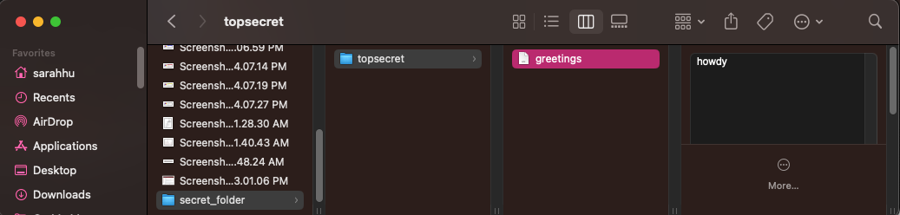

File structure
1 Computer file structure
Your computer files and folders can all be accessed via the ‘Terminal’.
This is the location of a file called
greeting.txton my computer.
The exact same file can be found via the terminal.

2 Basics of the terminal
ls List files
pwd Print working directory
cd Change directories
less Show preview in terminal (quit by hitting “q”)
mv Move file
mkdir Make a new folder or directory
2.1 Activity
Pull up the last document you opened on your computer. Repeat this in terminal. What is the path location of that file?
less Desktop/secret_folder/topsecret/greetings.txt2.2 Activity
How would you move a file titled “tmp.csv” from your current directory to one called archived-files?
# mv [file] [location]2.3 Activity
Create a new directory in
r-intro-docscalled HELLO. Movegreeting.txtto that new directory. What is the full path ofgreeting.txt?
3 Pro tips for organizing & naming files
Use a consistent theme in file naming
Do not use spaces or special symbols. Dashes and underscores are helpful! (avoid using periods in file names too)
Capitalization matters (and can be helpful)
What else?